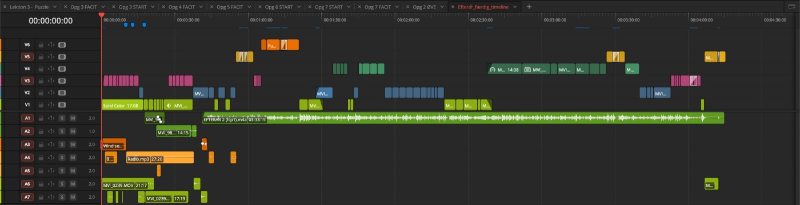

Hvem er jeg
Hans-Peter Bonnichsen
- 12 år som gymnasielærer på Greve Gymnasium
- Har redigeret i DaVinci Resolve siden 2018
- Driver HP's TV-stue: redigeringskurser, musikvideoer, livekoncerter og corporate-interviews
Hvorfor Resolve
Jeg var nysgerrig, og så var jeg solgt
- Den mindede mig om Final Cut 7. Ingen magnetic timeline.
- Gratisversionen er mere end nok til at begynde med. Sådan er det ikke med Premiere.
- Flere programmer i ét. Fusion, Color og Fairlight følger med som en kæmpe bonus.
- Mac og PC. Det er guld i undervisningen, for alle elever kan være med.
Dagens mål
Det her er filmen
I dag genskaber vi starten af den, bid for bid, og til sidst eksporterer I jeres egen version.
Og sådan ser den ud indeni. Billederne er bygget i lag oven på hinanden, og musikken ligger under det hele.

Spilleregler
Sammen skaber vi den gode kursusdag
- Når jeg viser, er hænderne væk fra musen. Når jeg siger "nu", går vi i gang.
- Tiden er tiden. Når nedtællingen er slut, åbner vi alle næste START-timeline, færdige eller ej.
- Står du fast: siden først, så sidemanden, så mig.
- Kun Resolve og kursussiden er åbne. Mail og telefon venter til pauserne.
- Hurtigt færdig? Tag ekstraopgaven, og vent med næste opgave.
Min del af aftalen: ingen gennemgang varer mere end 5 minutter.
Sådan kører hver opgave
Vis, gør, checkpoint
-
Vis
Jeg viser det. I kigger med.
-
Gør
I gør det selv. Tiden står på skærmen, og opgaven står på siden.
-
Checkpoint
Når tiden er gået, åbner alle næste START-timeline. Så står vi samme sted, uanset hvor langt man nåede.